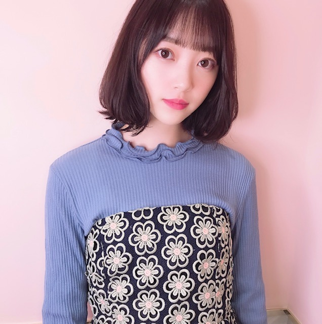
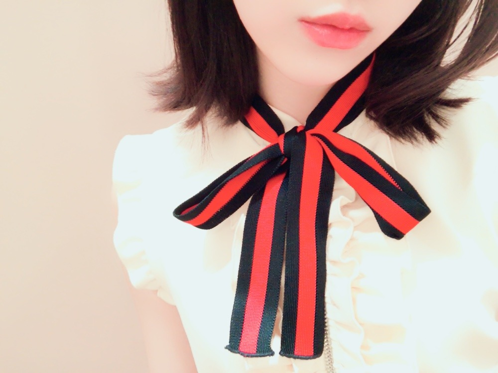
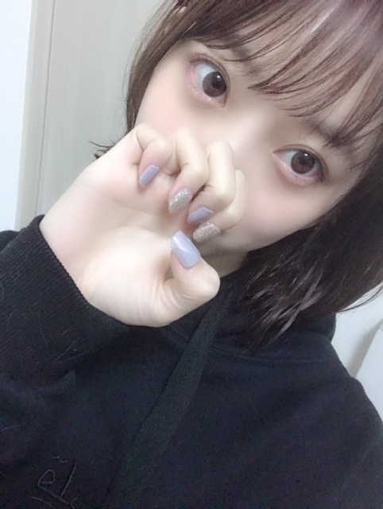
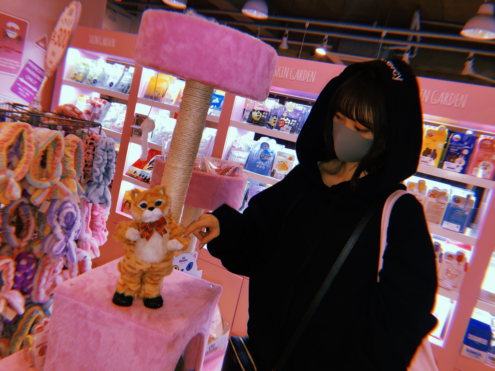
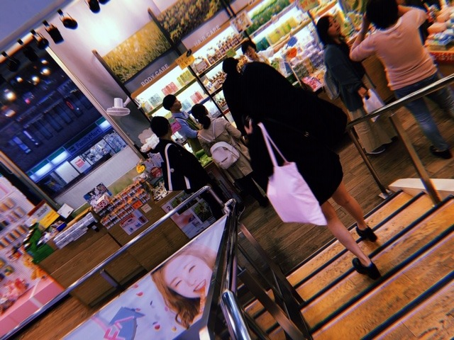

2019/0414Sunちょきちょきしたよ
と、言っても前髪を切っただけです！が
髪色を、暗めにしました〜
名前は
#kittengrey だそうです☺︎
初めてグレー系にしました

子猫ちゃん色なんだって✨
ちょっとブルーも入ってて本当に猫みたいな髪色！
猫は詳しくないけどスコティッシュとノルウェージャンフォレストキャットがかわいいなあって思います
ツンデレなところも猫の魅力ですよね
ツンデレなところも猫の魅力ですよね
犬は甘々さんだからそこも可愛いし
結局みんな違ってみんな良い...
最近は映画ハロウィンを公開日に母と観に行ってきました！！ずっと楽しみにしてた！ブギーマン！
カメラアングルと音が絶妙で
最近は映画ハロウィンを公開日に母と観に行ってきました！！ずっと楽しみにしてた！ブギーマン！
カメラアングルと音が絶妙で
終始ハラハラドキドキしてました
強い女性ってホラー映画に時々出てくるけどめちゃくちゃかっこいいんですよ...
子供や自分を守る為に強くあろうとする姿にハッとさせられます
私の人生テーマの1つに
強い女性になること
があるので。頑張ります。いろんな意味での強さを身につけたいな
強い女性ってホラー映画に時々出てくるけどめちゃくちゃかっこいいんですよ...
子供や自分を守る為に強くあろうとする姿にハッとさせられます
私の人生テーマの1つに
強い女性になること
があるので。頑張ります。いろんな意味での強さを身につけたいな

去年の秋かな？夏前かな？の写真なのですが
これくらいまで地毛で伸ばしたい気分☺︎
そしてホットギミック ガールミーツボーイ
の取材が先日ありました！
久しぶりに亮輝、初、梓、凌 4人集まったけど相変わらず和気藹々と楽しい時間だったなぁ✨
早く皆さんに映画を観ていただきたいです
そして公式Twitter
も、是非フォローよろしくです
オフショットやらいろんな情報がこれから投稿されていきます！
フォロワーさんが増えると良いことがあるかも...？
お楽しみに☺︎

ネイルチップが最近はお気に入り！
これは新大久保で買いました〜ラメ好き
犬飼ってる家あるあるだと思うのですが、パーカー毛だらけになりませんか？？？
わたし何回コロコロしてもダメ...笑
この写真も若干のプティとニコルの毛が見えます...笑
抜け毛問題...(´ｰ｀)

この猫ちゃんかわいい。笑
dancing〜
でははははは

2019/04/14 12:24
コメント(343)
ブログありがとうございます！
ホットギミック早く観たいです！！
ホットギミック早く観たいです！！
動物は、嘘もつかないし忖度もしないし戦略的に行動しないので、素直に信用できるから心許せますね。
(^ー^)
(^ー^)
チャァオ～～!☆彡
ねぇ～～⤴️⤴️⤴️❕❤️❤️❤️❤️❤️笑顔
ねぇ～～⤴️⤴️⤴️❕❤️❤️❤️❤️❤️笑顔・・・
みおちゃん❕・・・
最初写メ～～～⤴️⤴️・・・
ファッション雑誌の表紙みたいでぇ～～⤴️⤴️・・・
素敵だよぉ～～～⤴️⤴️❕❤️❤️❤️❤️❤️笑顔
綺麗だわぁ～～～⤴️⤴️❕❤️❤️❤️❤️❤️笑顔
～～☆～☆☆～☆～☆☆～～
あるあるぅ～～～⤴️⤴️❕❤️❤️❤️❤️❤️笑顔
パーカーにワンちゃんの毛ついているの～～⤴️⤴️
それぇ～～⤴️⤴️・・・
おいら、意外と好きですよぉ～～～⤴️⤴️⤴️❕❤️❤️❤️❤️❤️笑顔
☆大人しい、おすまし！より☆彡
私服のセンスあり！
猿の次は猫ですか？w
猿の次は猫ですか？w
髪色もいいけど、毛先にボリュームを
持たせた、可愛いボブ？ですね。
みんな違ってみんな良いって、考えて
みれば乃木坂を象徴してるね。
それにしても、お母さんと行くには、
パンチの効いた映画をチョイスしまし
たね。
お母さんも映画ずきなのかな。
いろいろ観てきた結果、ここにたどり
着いたとか。
強い女性かぁ。その為のアクション部
だったのに、一回リセットされちゃっ
たからね。いつか活動できるといいね
抜毛問題。特に春先は大変でした。
いわゆる室内犬では無かったので、
ブラシをかけるとごっそり抜けて、
紡げばセーターを編めるんじゃ、くら
い抜けてました。
持たせた、可愛いボブ？ですね。
みんな違ってみんな良いって、考えて
みれば乃木坂を象徴してるね。
それにしても、お母さんと行くには、
パンチの効いた映画をチョイスしまし
たね。
お母さんも映画ずきなのかな。
いろいろ観てきた結果、ここにたどり
着いたとか。
強い女性かぁ。その為のアクション部
だったのに、一回リセットされちゃっ
たからね。いつか活動できるといいね
抜毛問題。特に春先は大変でした。
いわゆる室内犬では無かったので、
ブラシをかけるとごっそり抜けて、
紡げばセーターを編めるんじゃ、くら
い抜けてました。
なんか…好き
堀ちゃん、ブログ更新ありがとう。
kittengreyの堀ちゃん以前のハニーミルクベージュと違った感じでとても可愛いね。また、ホットギミックフォローしたよ。
公開まで楽しみにしてるね。
kittengreyの堀ちゃん以前のハニーミルクベージュと違った感じでとても可愛いね。また、ホットギミックフォローしたよ。
公開まで楽しみにしてるね。
未央奈ちゃんありがとうございます！楽しみにしてます‼頑張ります‼頑張って下さい。ありがとうございます‼頑張ります‼
未央奈ちゃん♪こんにちは＼(^o^)／
写真可愛い(//∇//)
すごく似合ってるよ♪
猫も犬もどっちも可愛いよね♪
どっちも好きだな(*^^*)
未央奈ちゃん強い女性だよ♪
頑張ってね！
髪長いのもすごく好きだよ♪
楽しい時間で良かったね♪
早く映画見たいな(≧∇≦)
ネイル可愛いね(*^^*)
抜け毛見えるね(笑)
あるあるだね♪
猫ちゃん可愛いね(*^^*)
またね♪
未央奈ちゃん神推し
秀喜より！(≧▽≦)
写真可愛い(//∇//)
すごく似合ってるよ♪
猫も犬もどっちも可愛いよね♪
どっちも好きだな(*^^*)
未央奈ちゃん強い女性だよ♪
頑張ってね！
髪長いのもすごく好きだよ♪
楽しい時間で良かったね♪
早く映画見たいな(≧∇≦)
ネイル可愛いね(*^^*)
抜け毛見えるね(笑)
あるあるだね♪
猫ちゃん可愛いね(*^^*)
またね♪
未央奈ちゃん神推し
秀喜より！(≧▽≦)
ブログ更新ありがとう！
ホットギミック観に行きます。
ホットギミック観に行きます。
とてもかわいいです❤️ これからもずっと応援してます！
みおにゃ！！
可愛い〜‼️
髪色いいね‼️
似合ってる〜
猫よりも犬よりもみおにゃが可愛い
そんなフツーに歩いてたら襲われちゃうよ！
心配……気をつけてね。
会いたいなーみおにゃに…
スタイル良すぎて涙出る
生きてて11年間でこんなに好きになったのは初めて
だよ~！
可愛いし面白いし
スタイルいいし
どタイプだし
見た瞬間キュン死にしたし
抱きしめたくなった。
幼馴染にいたら絶対告るよ！ウンウン（女です）
憧れです！！！！！！！！！
みおにゃにすっっごくメロメロだ〜〜
これからも元気で可愛くて面白いみおなでいてね〜❤️
大好きです
very cute❣️
可愛い〜‼️
髪色いいね‼️
似合ってる〜
猫よりも犬よりもみおにゃが可愛い
そんなフツーに歩いてたら襲われちゃうよ！
心配……気をつけてね。
会いたいなーみおにゃに…
スタイル良すぎて涙出る
生きてて11年間でこんなに好きになったのは初めて
だよ~！
可愛いし面白いし
スタイルいいし
どタイプだし
見た瞬間キュン死にしたし
抱きしめたくなった。
幼馴染にいたら絶対告るよ！ウンウン（女です）
憧れです！！！！！！！！！
みおにゃにすっっごくメロメロだ〜〜
これからも元気で可愛くて面白いみおなでいてね〜❤️
大好きです
very cute❣️
ブログ更新ありがとう！！
髪型お似合いですー、！！！
ホットギミックの公開も楽しみー！！
ツイッターもインスタもフォロー、するねー！！
身体に気を付けて頑張って下さい！！
髪型お似合いですー、！！！
ホットギミックの公開も楽しみー！！
ツイッターもインスタもフォロー、するねー！！
身体に気を付けて頑張って下さい！！
未央奈ちゃん、お疲れさまです。
ヘアスタイルやカラーを変えるだけで
気持ちもリセットされたり、
背伸びしたくなりますね！
僕もちょうどカラーチェンジして
沖田総悟君にはできませんが、
ちょっと赤めにしました。
お母様と映画に行かれるなんて
素敵なご家族ですね！！！
守るために強くなりたい、
かっこよくなりたいって
未央奈ちゃんらしいかも。
それを男性に求めないところが
未央奈ちゃんらしいというか、
でも本心は守って欲しいんですよね！！！
これからも応援し続けます。
未央奈ちゃんらしく
頑張ってくださいね！！！
ヘアスタイルやカラーを変えるだけで
気持ちもリセットされたり、
背伸びしたくなりますね！
僕もちょうどカラーチェンジして
沖田総悟君にはできませんが、
ちょっと赤めにしました。
お母様と映画に行かれるなんて
素敵なご家族ですね！！！
守るために強くなりたい、
かっこよくなりたいって
未央奈ちゃんらしいかも。
それを男性に求めないところが
未央奈ちゃんらしいというか、
でも本心は守って欲しいんですよね！！！
これからも応援し続けます。
未央奈ちゃんらしく
頑張ってくださいね！！！
未央奈ちゃん、ブログ更新ありがとう！！
髪、めちゃくちゃ似合ってるね。かわいい！！
私、スコティッシュの猫ちゃん飼ってるよ〜！！
甘えん坊さんでとってもかわいいよ〜。
パーカーとか制服に猫の毛がつきまくってて、私もいつも大変で、最近はもう諦めかけてます…
ホットギミック楽しみにしてるね。大好き！！
髪、めちゃくちゃ似合ってるね。かわいい！！
私、スコティッシュの猫ちゃん飼ってるよ〜！！
甘えん坊さんでとってもかわいいよ〜。
パーカーとか制服に猫の毛がつきまくってて、私もいつも大変で、最近はもう諦めかけてます…
ホットギミック楽しみにしてるね。大好き！！
ブログ更新ありがとう
堀ちゃん可愛い(^-^)
これからも応援してます
堀ちゃん可愛い(^-^)
これからも応援してます
衣装と後ろのピンクの背景との調和と、堀ちゃんの表情も何とも言えず可愛いですね。衣装もお洒落ですね。髪の毛の長さも1番似合っている長さだと、個人的には思います。今回も可愛いですね。
未央にゃブログ更新有難う
子猫ちゃん色というカラーがあるんだね
知らなかった( ^ω^ )
あと動物の毛
うちのはシングルコートなので、あまり抜けないけど、ダブルコートとかだと、どんなにとっても絶対毛が着いてるもんねww
でもそれを発見すると嫌な気持ちじゃなく、愛おしい気持ちになりますよねwww
子猫ちゃん色というカラーがあるんだね
知らなかった( ^ω^ )
あと動物の毛
うちのはシングルコートなので、あまり抜けないけど、ダブルコートとかだと、どんなにとっても絶対毛が着いてるもんねww
でもそれを発見すると嫌な気持ちじゃなく、愛おしい気持ちになりますよねwww
グレー系の髪色可愛い！！！
地毛で髪の毛伸ばしてほしいなあ〜私 ロングの未央奈ちゃん好きなの♡
すごく写真でもわかるくらい犬の毛が見えるね( 笑 )
でもそれだけ犬が寄ってきてくれてるって思ったら嬉しいよね〜〜
ブログ更新ありがとう〜
れに
地毛で髪の毛伸ばしてほしいなあ〜私 ロングの未央奈ちゃん好きなの♡
すごく写真でもわかるくらい犬の毛が見えるね( 笑 )
でもそれだけ犬が寄ってきてくれてるって思ったら嬉しいよね〜〜
ブログ更新ありがとう〜
れに
堀さん、こんにちは。
ちょきちょき前髪、決まっていい感じですか？ 子猫色の髪色ってどんな感じなのでしょう？ やっぱり白と茶と黒の三色まだらかなあ（←三毛猫じゃないって 笑）。
最近映画館に映画観にいけてないのでちょっと寂しい。春の新作観に行きたい！
映画『ホットギミック』は公開が近づいてくるとまたいろいろなところで特集されることでしょう。映画の楽しさが多くの人に伝わることを願って。
ではまたコメントします。今日は暖かくて春らしい一日。
さらばだ、また会おう！（気球に乗って去りぬ〜）
ちょきちょき前髪、決まっていい感じですか？ 子猫色の髪色ってどんな感じなのでしょう？ やっぱり白と茶と黒の三色まだらかなあ（←三毛猫じゃないって 笑）。
最近映画館に映画観にいけてないのでちょっと寂しい。春の新作観に行きたい！
映画『ホットギミック』は公開が近づいてくるとまたいろいろなところで特集されることでしょう。映画の楽しさが多くの人に伝わることを願って。
ではまたコメントします。今日は暖かくて春らしい一日。
さらばだ、また会おう！（気球に乗って去りぬ〜）
僕の家も猫飼ってるよ！。僕の猫はスコティッシュフォールドなんだけど雑種が混ざってる！
黒と茶色！。三毛猫みたいな色だよ。
新大久保って韓国の物がたくさんあるじゃん！
本場の焼き肉も食べてみたいな～。韓国のアーティストと言えば少女時代、Twice！
黒と茶色！。三毛猫みたいな色だよ。
新大久保って韓国の物がたくさんあるじゃん！
本場の焼き肉も食べてみたいな～。韓国のアーティストと言えば少女時代、Twice！
かわいいー
ホットギミック楽しみにしてます
ホットギミック楽しみにしてます
「ハロウィン」CMでみたー！！男の人が襲いかかってくるてきなストーリー？まだ、みてないからゴールデンウィーク中にみたいなー。それか、アルバムを買うときについでにみちゃおっかなー。23枚目シングル予約しなくちゃー。ジャケ写が楽しみ！
みおちゃんブログ更新ありがとう♪
ちょきちょきしたの可愛い ❤
その髪色好き(｡･ω･｡)
握手したいよー＼(^^)／可愛いみおちゃん大好き ❤
ちょきちょきしたの可愛い ❤
その髪色好き(｡･ω･｡)
握手したいよー＼(^^)／可愛いみおちゃん大好き ❤
可愛いぞみおな

今日、２０キロ歩いた
後１６キロ歩く
今日、２０キロ歩いた
後１６キロ歩く
堀ちゃん、こんにちは＼(・ω・)／
き・・きてんぐれー？
ふむふむ、何ちゃらグレー、よく似合ってるよ
うちの実家にいる猫は、なんか茶色っぽいんだよね。
なんだろ、珍種かな？？
よく実家にいた猫がしっぽをふらふら揺らしていたから、僕がそのしっぽをぎゅっと掴んで静止させると猫はしばらくガマンしているけど、次第にストレスが溜まったのか、「ぎゃー」って爪を立ててくるよ
ちなみにうちの実家では、座布団が毛だらけになる、猫がよくその上で寝てるから。
ある日、勝手に僕のベッドの上で寝てたこともある・・・。
かなり前に『バイオハザードV リトリビューション』を映画館で見たけど、たしかこの映画でも女性の強さを覗えるような感じだった気がする。
わははははは
き・・きてんぐれー？
ふむふむ、何ちゃらグレー、よく似合ってるよ
うちの実家にいる猫は、なんか茶色っぽいんだよね。
なんだろ、珍種かな？？
よく実家にいた猫がしっぽをふらふら揺らしていたから、僕がそのしっぽをぎゅっと掴んで静止させると猫はしばらくガマンしているけど、次第にストレスが溜まったのか、「ぎゃー」って爪を立ててくるよ
ちなみにうちの実家では、座布団が毛だらけになる、猫がよくその上で寝てるから。
ある日、勝手に僕のベッドの上で寝てたこともある・・・。
かなり前に『バイオハザードV リトリビューション』を映画館で見たけど、たしかこの映画でも女性の強さを覗えるような感じだった気がする。
わははははは
ブログ更新ありがと～☺
髪色可愛いね
犬の毛はあるあるだね笑
髪色可愛いね
犬の毛はあるあるだね笑
うちの犬は、
毛よりもにおいが
めちゃめちゃつきます^^;
髪色、良い感じですね❤
ネイルも可愛いな～☺
毛よりもにおいが
めちゃめちゃつきます^^;
髪色、良い感じですね❤
ネイルも可愛いな～☺
みおちゃん
うひゃー！かぁわいー！あ、いや、どうしたの？もしかしてまだダイエット中？それともお肉禁ってやつ？みおちゃんがそんなことを言っているのを聞いたら、今から食べるお肉はどうしたら良いのかな？僕の代わりにみおちゃんが食べてくれる？それとも…？？
体の調子はどうかな？いっぱい食べて、ちゃんと体を休めて、しっかりと寝て、明日も元気でいてね☆(^ ^)
でははははは
おやすみっっ
うひゃー！かぁわいー！あ、いや、どうしたの？もしかしてまだダイエット中？それともお肉禁ってやつ？みおちゃんがそんなことを言っているのを聞いたら、今から食べるお肉はどうしたら良いのかな？僕の代わりにみおちゃんが食べてくれる？それとも…？？
体の調子はどうかな？いっぱい食べて、ちゃんと体を休めて、しっかりと寝て、明日も元気でいてね☆(^ ^)
でははははは
おやすみっっ
ほりっぴ～、ナンチです♪
ブログ更新ありがとう～
新しい髪色見たいな～
アルバム握手会が楽しみすぎる
ブログ更新ありがとう～
新しい髪色見たいな～
アルバム握手会が楽しみすぎる
堀ちゃん似合ってる！
可愛い！
可愛い！
ネイルうちも買おっかな
でも上手くぬれない 上手にぬれる塗り方ある？？
あったら教えて欲しい！！
でも上手くぬれない 上手にぬれる塗り方ある？？
あったら教えて欲しい！！
いつもかわいい未央奈に癒されてます
体調にだけは気を付けてね
大好きです
体調にだけは気を付けてね
大好きです
ほんとかわいい
更新ありがとう。
5月から社会人になります。
近々岐阜に行く予定です。楽しんできます。
映画ホットギミック観に行きます。ちなみに僕の誕生日は、ハロウィーンなんですよ。
また会いましょう。
5月から社会人になります。
近々岐阜に行く予定です。楽しんできます。
映画ホットギミック観に行きます。ちなみに僕の誕生日は、ハロウィーンなんですよ。
また会いましょう。
みおちゃん更新ありがとう！
みおちゃんはもう十分強い女性だよ!
でもこれからもっと強くなるんだよね!ファイト!
みおちゃんはもう十分強い女性だよ!
でもこれからもっと強くなるんだよね!ファイト!
とっても似合っていて素敵です！
ブログ更新ありがと〜(o^^o)
髪色、すごく似合ってる(*^^*)
子猫色っていう色、初めて聞いた笑
猫はスコティッシュ派です。
可愛いけど…猫アレルギー…
自分の体をちょっとだけ恨んでます。笑
ハロウィン、さっき観ました！
カメラアングルが本当にいいんよね。すっごくわかる。
ホットギミックもだんだん近づいてきてますね！
めちゃくちゃ楽しみ〜(*´꒳`*)
様々なところで特集とかも入ると思うので、
沢山の人に良さを伝えられるように祈ってます(o^^o)
でわ、今日はこのへんで
お体には気をつけてね。
またコメントしますっ
髪色、すごく似合ってる(*^^*)
子猫色っていう色、初めて聞いた笑
猫はスコティッシュ派です。
可愛いけど…猫アレルギー…
自分の体をちょっとだけ恨んでます。笑
ハロウィン、さっき観ました！
カメラアングルが本当にいいんよね。すっごくわかる。
ホットギミックもだんだん近づいてきてますね！
めちゃくちゃ楽しみ〜(*´꒳`*)
様々なところで特集とかも入ると思うので、
沢山の人に良さを伝えられるように祈ってます(o^^o)
でわ、今日はこのへんで
お体には気をつけてね。
またコメントしますっ
好きです。
未央奈～～～～～～ナァっ。
可愛いっす。髪の毛チョキチョキした未央奈。
あと、ホットギミック もうすぐだね。楽しみ楽しみ♪
買い物してる未央奈。何か怪しい(笑)
誰に撮ってもらってるんだろか？フフフ
未央奈のマスク、キャシャーンマスクだぁ。最近、使ってる人多いね。
プライベート写真良いね。叉、観たい。更新も宜しくね。そいでは。今日は風強い。早々にベランダからお布団を片付けました。バイバイ～～
可愛いっす。髪の毛チョキチョキした未央奈。
あと、ホットギミック もうすぐだね。楽しみ楽しみ♪
買い物してる未央奈。何か怪しい(笑)
誰に撮ってもらってるんだろか？フフフ
未央奈のマスク、キャシャーンマスクだぁ。最近、使ってる人多いね。
プライベート写真良いね。叉、観たい。更新も宜しくね。そいでは。今日は風強い。早々にベランダからお布団を片付けました。バイバイ～～
髪色可愛い！
いろんな髪色もロングもショートも似合うみおな凄すぎ、可愛すぎる！！
私も犬飼ってるからめっちゃ服に毛つくよ笑
コロコロしてもいつのまにか毛だらけ！
抜ける時期なのかな？
ネイルチップ可愛い〜
踊るネコちゃんちっちゃい頃欲しかった！
おじさんネコみたいで可愛いよね
いろんな髪色もロングもショートも似合うみおな凄すぎ、可愛すぎる！！
私も犬飼ってるからめっちゃ服に毛つくよ笑
コロコロしてもいつのまにか毛だらけ！
抜ける時期なのかな？
ネイルチップ可愛い〜
踊るネコちゃんちっちゃい頃欲しかった！
おじさんネコみたいで可愛いよね
にあってる！
子猫ちゃん色、猫のイメージがある未央奈ちゃんにはピッタリですね♪
自分はアビシニアンとロシアンブルーが好きです。
行きつけの猫カフェでは、アビシニアンは初めから人懐っこく、ロシアンブルーは中々そばに来てくれなかったんですが、最近ようやく足元まで来てくれる様になりました。
でも触られるのは抵抗があるみたいで、一撫でしただけで、逃げられてしまいます。
もっと仲良くなれると良いなぁ☆
自分はアビシニアンとロシアンブルーが好きです。
行きつけの猫カフェでは、アビシニアンは初めから人懐っこく、ロシアンブルーは中々そばに来てくれなかったんですが、最近ようやく足元まで来てくれる様になりました。
でも触られるのは抵抗があるみたいで、一撫でしただけで、逃げられてしまいます。
もっと仲良くなれると良いなぁ☆
お疲れ様です!
似合うね
最近。堀ちゃんがキレイなお姉さんになってきてるね！
映画公開楽しみにしてます。。
映画公開楽しみにしてます。。
堀ちゃんお疲れ様です！
髪色凄く似合っていてもっともっと好きになりました！
ホットギミックも今からすごく楽しみです！これからも色々続くと思いますが引き続き体調には気をつけて頑張ってください！！
髪色凄く似合っていてもっともっと好きになりました！
ホットギミックも今からすごく楽しみです！これからも色々続くと思いますが引き続き体調には気をつけて頑張ってください！！
ブログ更新ありがとう！
髪めっちゃ似合ってるよー！
髪めっちゃ似合ってるよー！
未央奈ー、ブログ更新してくれてありがとう！
前髪を切って髪の色を変えたんだね！またいい色で一段と大人に、また美人になってますね！
未央奈が最近忙しいと思うので、今日は短めで笑
最近忙しいと思うけど、頑張ってね、応援しています！
前髪を切って髪の色を変えたんだね！またいい色で一段と大人に、また美人になってますね！
未央奈が最近忙しいと思うので、今日は短めで笑
最近忙しいと思うけど、頑張ってね、応援しています！


黒の布地は目立ってしまうからより
大変です⁉︎
幸いうちのレオくんは
プードルの血が入っているので
他の犬種よりは抜け毛が少なくて
楽ですよ〜
そして前髪を少し切った堀未央奈さん
ブログ更新ありがとう⁉︎
猫詳しくない割には中々の種類を
ピンポイントに言いましたね⁉︎笑笑
ブルーの服可愛らしいね⁉︎
春らしく爽やかな色合いが良かです。
ネイルも可愛らしいね⁉︎
また私服待ってるよ〜〜⁉︎
そういえば二期生会あったみたいだね⁉︎
これからも二期生、同期を大切に頑張って
下さい⁉︎応援してるよ〜〜⁉︎